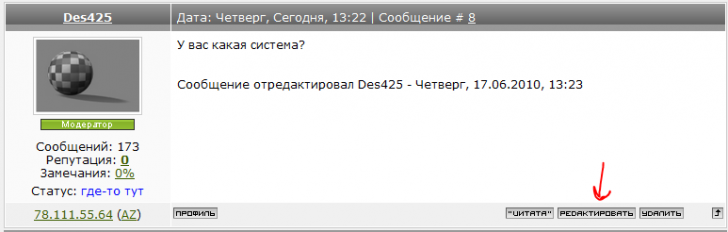

Умерли почти все шрифты
Tarantul / 16.06.2010, 15:07/00:41
Форум:
Доброго всем дня!
Такая вот напасть приключилась - после установки Х5 добрая часть русских и не только шрифтов накрылась медным тазом :(
Причем не только в новой версии, но и в старом Х3 тоже. Фонтнавигатор ругается на них как на поврежденные. Как бороться, подскажите пожалуйста!
А вы уверенны что это именно после Х5? :) Сильно смахивает на какую то заразу :)
Да и большой вопрос, что у вас за шрифты, я имею виду формат и производителя?
Нуууу...Случилось это сразу после установки Х5. Заразы нету точно. Вообще такое очучение, что Font Navigator'ы конфликтуют. Потому как перегружаю комп и в FN Х5 какие-то ставятся иногда, потом опять отмирают. Такая вот хрень.
Шрифты разные. И бесплатные, и фирмовые. И опентайпные, и ТТ. Выключаются 50/50 и те и другие. Главное обидно, что в Х3 теперича такая же тема - старые файлы шрифты в упор не видят.
Значит вам просто "повезло"!
Если у большинства всё нормально, значит дело в вашей системе.
:D Да уж... Повезло так повезло... Попробую другую систему поставить.
У меня также в смысле.
У меня почему-то в 13 кореле те шрифты, которые нормально работали встали квадратиками.
Sinto, так же да не так же.
В 13 они по прежнему работают? Или как?
П.С. не нужно создавать по несколько сообщений подряд. Достаточно нажать кнопку "редактировать" на последнем и добавить нужную информацию. Отредактировал.
Sancho, я уже убилась кнопочку "редактировать" искать - ну нету ее у мну.
В 13 те русские шрифты у меня, которые нормально работали до Х5теперь квадратами стали и в новом кореле тоже :( А некоторые не устанавливаются - фонт навигатор при попытке установки говорит "Unable ti install this font"
У вас какая система?

Поставь АТМ де Люкс 4.1 и будет тебе счастье! Лучшего фонтменеджера нет!
Это ж надо додуматься -- профессионал и пользуется фонтнавигатором!
chally, Осторожно с высказываниями!
И читай внимательно комментарии, профессионал :D )
Ага, поставь и будет тебе НЕ счастье ;D Уродливее прогу для работы со шрифтами в жизни не видел. FontExpert - вот это тема!!! :)
Tarantul и Sinto, уточните пожалуйста версию CorelDRAW 15.0.???
Страницы